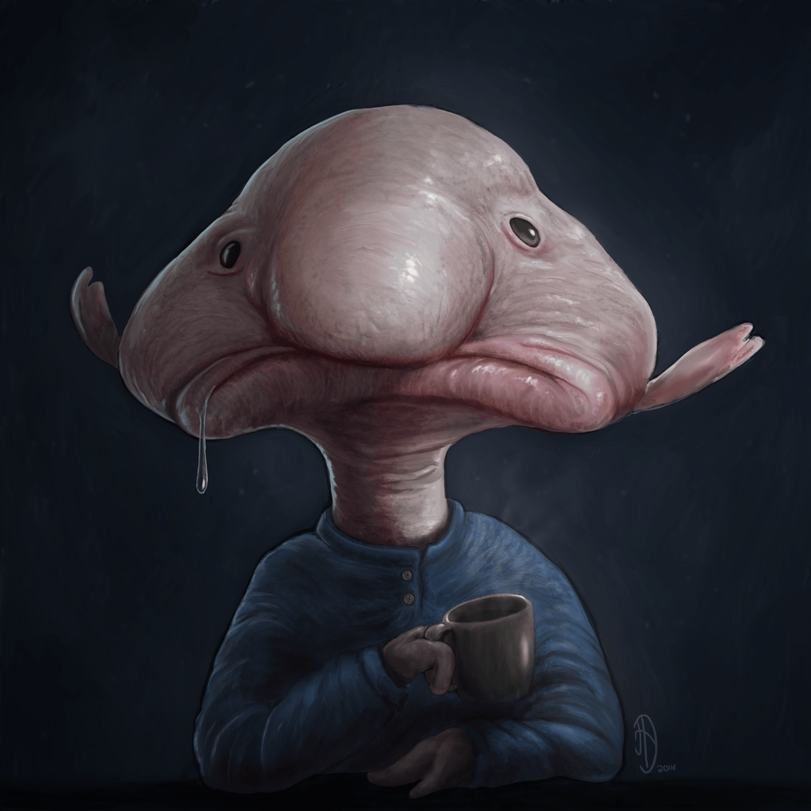

MR BLOBBY
The scientists and crew on board the RV Tangaroa affectionately called this fish 'Mr Blobby'. The fish's body is flabby and not adapted to be out of water! The yellowish 'blob' on the right side of Mr Blobby's mouth is a parasitic copepod. The specimen now resides in the Australian Museum Ichthyology Collection (AMS I.42771-001). It was initially fixed in formaldehyde and is now preserved in 70% ethyl alcohol. The fixation process has 'tightened' Mr Blobby's skin so his 'nose' has shrunk and he no longer retains his 'cute' look.
Mr Blobby is psychrolutid fish (family Psychrolutidae). Fishes in this family are called the blobfishes or fathead sculpins. They are found in marine waters of the Atlantic, Indian and Pacific Oceans at depths between 100 m and 2800 m. The common name 'fathead sculpin' refers to the large, globular head and 'floppy' skin that is typical of these fishes. Little is known of their biology. Some have been found with gastropods in the stomach.
Jeff Leis wrote “Little is known about the larvae of the family Psychrolutidae. Neither the eggs nor the larvae of the blobfish have been described, but other (Northern Hemisphere) members of the family have demersal eggs (= attached to the bottom), and the larvae are deep-bodied with short guts, a short blunt snout, and variable pigment. This information comes from Kendall (2011). Probably the best readily available source on the larvae of psychrolutids is the Ichthyoplankton Information System. However, this website is only about fish eggs and larvae from the NE Pacific."